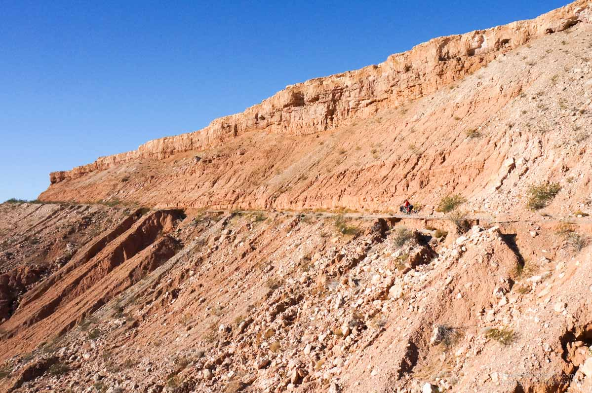

Zion
A couple kilometers from the campground we filled up with gas at Mount Carmel Junction. Getting gas for the stove is always a comical experience since my foreign credit card doesn't pass the ‘pay at pump’ criteria, therefore I have to go give my card to the attendant, ask them to turn on a pump and then proceed to pump 26 cents of gasoline. At the junction the road goes towards Zion. It is a slow steady climb for almost 20 kilometers where we have arranged our first stay with a WarmShowers.org host. It is a website that allows bicycle travelers to host other bicycle travelers sort of as a pay it forward model. This host was quite the experience, he even stopped in finding us by the tandem bike and asked if we needed a lift and then offered to take us through the Zion tunnel later. It turns out he is the manager of a guest ranch which caters to family reunions and weddings. We got to stay in a bunkhouse and have access to food in the fridge all for free. Gordon, the host, biked from Alaska to the Grand Canyon a couple years back and likely used the service himself.
That evening we biked up to the trailhead for Observation Point. From there it was a 5km hike along a flat trail since we hadn't descended into the Zion canyon. We got there in time for sunset and watched it until it got dark. We then had the return hike and bike ride back in the dark. Biking on the back of the tandem in the dark is all about letting go and looking at the stars. :)
We decided that instead of getting an early ride with Gordon we would bike to the tunnel and hitchhike through. The ride quickly entered Zion park and was all downhill. The park gate attendant told us to ride through the first tunnel and reminded us of the problem at the second. The ride down into the park was incredible. All slick rock mountains and barely a hint of pedaling required. The first tunnel was indeed a short arch. And a lineup of cars indicated we approached the second tunnel. The long tunnel is a mile through sandstone was built a long time ago to small car standards and very little lighting. Therefore, no bicycles are allowed but hitchhiking is permitted. The cards get stopped every time there is an RV for which they shut down all traffic and allow the RV to drive through in the middle of the arched tunnel. Annette walked up the row of cars soliciting a ride and eventually convinced an older couple to take the bike and me first. The bike hung out the back of their camper van. Eventually Annette joined me on the other side of the tunnel with the trailer after getting a ride from some Canadians.
We descended Zion’s famous switchbacks under the big arch and then rode to the first come first serve campground. We had one night reserved at the reservable one, but found there was space at the first come so we found a spot and transferred our one night credit. We would remain here for 5 nights in a pretty good site except for a complete lack of privacy. It was pretty ideal for us, we could pay each morning for another night and we were right next to the bike path which we could walk to the shuttle bus or head to Springdale for all kinds of services.
The next day we did the Angel’s Landing hike, very busy but it is one of the most popular hikes in the US. It got pretty steep at the end, and I was definitely nervous but the view was well worth it. Thousand foot drops all around the spire we climbed to the top on.
The following day, we rented dry pants, canyoneering shoes and neoprene socks to do the narrows hike. The rentals were very expensive particularly since we already own all this gear but decided since we were here we couldn't miss the opportunity. The narrows is the canyon in which the main river of Zion cuts. It starts wide and get very narrow, well worth the hike up river in the knee deep water.

After a rest day, we booked a day of guided canyoneering. Again, very expensive but I’ve always wanted to try it. We did a dry slot canyon for a day hike with multiple rappels through tight sandstone walls. While we could have done the rappelling ourselves it was useful to have the guide to learn some tricks and also figure out the complicated shuttle for which he used a dirt bike to retrieve his truck.
The next day we decided to leave Zion. There was so much at the park to do, we did just the famous hikes but could have explored much more now that we were familiar with what is around. But it felt as if we needed to move on.
Riding to the next campground we found it would be 40 USD so decided to make it our longest distance day and went to the town of St. George. The campground was cheaper and we needed the towns services to get organized. We had a 10 minute ride to a grocery store and a Walmart along with all kinds of stores so we shopped and replaced some broken gear. We also went shopping for a new front rack. We did a loop through all the bike stores in town, planning on the one I had a new derailleur hanger on hold at last. It turned out the last one was the only one with any front racks from which we could choose from two. The store owner was very helpful and we eventually got a new front rack. We ended up staying three nights at this campground since all the gear fixing and chores took time. It would have been much more enjoyable if the campground wasn't directly on the interstate so it was easily the nosiest campground ever. Earplugs offered only a little respite. Of course, Donald Trump won the election so we have an ever increasing desire to hit the road. :)
To avoid the highway out of St George we took the old highway up through the mountains, it was a long downhill followed by a long uphill and then we descended a huge downhill out of Utah into Arizona. We must have coasted downhill beside a joshua tree desert for 15 kilometers with the whole Mohave desert stretching out in front of us for as far as the eye could see.
It was almost tempting to put the brakes on to enjoy the few but the irresistible draw downhill was compelling, the heavy bike easily hits 60 km/h on the downhills.
Our expected camp spot turned out to only accept RVs with a rule of no tents. All the snowbirds (older people from the Northern areas of the continent who want to escape snow) seem to occupy the RV parks for RV only rules seem to be the norm. However, just down the road a convenience store owner took pity on us and let us camp in his back compound for free - very nice.
The next day we had a challenge, as we had to cross a section of the Mohave that only the interstate goes through. Using Google maps we sourced some data of some back roads which would cross about 40 km of desert. We loaded up with water but the mental challenge was still intimidating. We started the first road in the late afternoon but found it would be too difficult. The road cut through sandy ravines every couple kilometers where we had to push the bike down 50 meters into the gorge and then back up the other side in soft sandy or very rocky trail. It was too much, particularly since my foot has a painful injury due to my first every day in flip flops which resulted in my heel being sliced open by a freewheeling chainring.
We followed another trail in the desert but didn't make it back to the road and decided to camp in the desert. A good experience with a clear sky and bright moon illuminating the sand all around until the ring of mountains in the distance. The next morning we got out of the road we were on and found the next route to attempt. This time it was the old highway which although closed was still paved.

We made good time and covered half of desert along a stretch of deserted pavement which only brought the occasional washout that had to be walked. At the halfway point we would have to turn into the desert and asked advice from a couple unloading their ATV. They advised against and offered to use their ATV trailer to take us 7 miles down the interstate so we wouldn't have to bike on it. We didn't want to bike the interstate due to questionable legality and really wanting to avoid the 130 km/h traffic which has a car passing every 1-3 seconds and a FedEx truck every minute. We easily accepted.
So now we are moving towards Lake Mead which is the highway loop we will use to get to Las Vegas hopefully in a couple days.